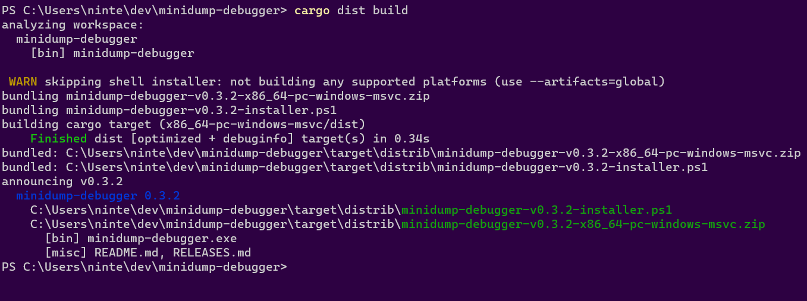

Everyone Else Quickstart
So you've written a piece of software and you'd like to distribute it, but managing CI and installers is hard. dist's generic build support lets you access all the same building and distribution features you get from Cargo-based builds in any language. This guide will help you get up and running as quickly as possible.
Setup
Once you've installed dist, you're ready to get started. Prepping your app for dist requires just a little bit of configuration.
dist uses a custom configuration format called dist.toml, written in the TOML format. dist can manage most of your settings for you, but we'll need to write a little bit of information to tell dist about your software and what it needs to expect.
To start, create a file named dist.toml in the root of your repository. The top of the file needs a field named [package] containing some basic metadata about your project, which looks like this:
[package]
# The name of your package; dist will use this in your installers and announcements
name = "quickstart-example"
# (Optional) Descriptive text about your package; some installers will present this to users
description = "This is a description of your package"
# The current version of your package - you'll update this with every release
version = "1.0.0"
# (Optional) Your package's license
license = "GPL-3.0-only"
# The URL to package's git repository
repository = "https://github.com/example/example"
# A list of all binaries your package will build and install
binaries = ["quickstart-example"]
# A command dist should run that will build your project
build-command = ["make"]
Once you've created this file, we can ask dist to generate the rest of its configuration for us: just run dist init, and answer all the questions it asks you. This command interactively walks you through configuration options, and should be run again whenever you want to change your settings or want to update dist.
Just to really emphasize that: dist init is designed to be rerun over and over, and will preserve your settings while handling any necessary updates and migrations. Always Be Initing.
Initial Setup
Since this is a quickstart, we'll pass --yes to auto-accept all defaults on our first setup!
# setup dist in your project (--yes to accept defaults)
dist init --yes
git add .
git commit -am 'chore: wow shiny new dist CI!'
It's very common for dist init to return an error about the "repository" URLs set in your Cargo.toml. If this happens, no work will be lost. You can just follow the instructions in the error and rerun dist init again and it will pick up where you left off.**
This one-time setup will:
- create your dist config in
dist.toml - generate CI for orchestrating itself in
.github/workflows/release.yml
Once you've run init, check your dist.toml: dist has added a bunch of new settings with all the choices you made. If you chose to turn on GitHub CI, you'll also see that it's created a .github/workflows/release.yml for you: this will be run every time you create a release of your software.
Adding Installers
The most common reason to update dist or mess with its config is to add a new installer, which is basically our blanket term for anything more fancy than tarballs (curl-sh scripts, npm packages, msi installers, ...).
You can skip this step for now and just test out the basics the initial setup gives you. Each individual installer should have a guide that assumes you did the initial setup.
The tl;dr of those guides is "run dist init again, select the installer you want to add, and fill in any extra details that are needed".
Test It Out
There are a several ways to test out dist before committing to running a proper release:
- build for the current platform (
dist build) - check what CI will build (
dist plan) - check the release process on pull-requests
Build For The Current Platform
dist build

The build command will by default try to build things for the computer you're running it on. So if you run it on linux you might get a tar.xz containing your binary and an installer.sh, but if you run it on windows you might get a zip and an installer.ps1.
dist will then spit out paths to the files it created, so you can inspect their contents and try running them (note that installer scripts probably won't be locally runnable, because they will try to fetch their binaries from GitHub).
Check What CI Will Build
dist plan

The plan command should be running the exact same logic that dist's generated CI will run, but without actually building anything. This lets you quickly check what cutting a new release will produce. It will also try to catch any inconsistencies that could make the CI error out.
Check The Release Process On Pull-Requests
By default we run the "plan" step of your release CI on every pull-request so that we can catch breakage to your release process as early as possible. This will work even for a pull-request that sets up dist for the first time, so you can be confident you're landing something that works.
You can also crank this up by setting pr-run-mode = "upload", which will run all the build steps as well, and upload the results to the PR's Workflow Summary as an "artifacts.zip". This is great for making sure the windows build works even if you only have a linux machine, or vice-versa. Although you should probably only keep it on temporarily, as it's very slow and wasteful to build all those shippable artifacts for every PR.
Cut A Release (Trigger Github CI)
dist largely doesn't care about the details of how you prepare your release, and doesn't yet provide tools to streamline it. All it cares about is you getting your release branch into the state you want, updating the version number in dist.toml, and then pushing a properly formatted git tag like "v0.1.0". Here's a super bare-bones release process where we're releasing by just pushing a bunch of stuff to main branch (but it would work just as well with PRs and release branches):
# <manually update the version of your package, run tests, etc>
# <make sure to set the package version in dist.toml, too>
# commit and push to main (can be done with a PR)
git commit -am "release: version 0.1.0"
git push
# actually push the tag up (this triggers dist's CI)
git tag v0.1.0
git push --tags
The important parts are that you update the crates you want to release/announce to the desired version and push a git tag with that version.
At this point you're done! The generated CI script should pick up the ball and create a Github Release with all your builds over the next few minutes!
More details
For more details on configuring builds and other advanced features, see the custom builds page. For more details on all of the supported fields in dist.toml, see the config page.